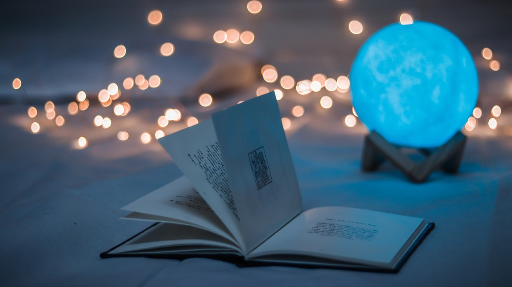

Struttura Narrativa
Idee Esplosive - Scrivere senza lasciarsi trascinare
7 luglio 2020

“Ideas are cheap, execution is everything.”
Ogni romanzo inizia da un’idea.
Le idee migliori arrivano senza sforzo, inaspettate. Esplodono nella tua mente e pretendono di essere scritte in quell’istante. Spingono dall’interno come un alien pronto a nascere e non ti danno tregua. Vuoi scrivere, scrivere, scrivere.
L’idea colpisce come un fulmine.
È così bella, così perfetta, che ci dobbiamo buttare nella scrittura a capofitto.
In quel momento c’è la certezza assoluta che il libro venderà 100.000 copie.
L’ispirazione arriva all’improvviso e ci trascina in un vortice meraviglioso. E così com’è arrivata, scompare. Dopo la prima ondata di entusiasmo, la scrittura diventa faticosa, si trascina.
Un rischio che non possiamo correre, se vogliamo essere scrittori prolifici e al contempo amare quello che facciamo.
💡 COSA FARE SE VIENI COLPITO DA UN’IDEA ESPLOSIVA
 Fai un respiro profondo
Fai un respiro profondo
D’accordo, per me “fai un respiro profondo” è la versione più soft di “stai calma”. Non c’è niente che mi faccia infuriare di più. Beh, per lo meno, se sei arrabbiato forse non ti metterai a scrivere!
Non tuffarti subito nella scrittura
Gli autori professionisti di rado cominciano a battere sulla tastiera appena gli scintilla un’idea in testa. Nel momento in cui iniziano a scrivere il testo vero e proprio, di solito hanno alle spalle lunghi giorni di preparazione.
Questo non significa che non inseguono l’ispirazione, solo che lo fanno con un certo grado di “piedi per terra”.
Lascia mantecare l’idea
Se riesci a vedere la storia nel suo insieme prima di cominciare, le possibilità di successo saranno maggiori.
Pianifica
Ogni scrittore è diverso, ognuno ha le sue tecniche preferite, ma certi elementi sono cruciali per scrivere un libro dall’inizio alla fine.
La tua idea può essere stupenda, ma se non è supportata da un’impalcatura più che solida, si sgretolerà.
Questo mi è successo fin troppe volte, portandomi a buttare via saghe intere, centinaia di migliaia di parole versate senza struttura in migliaia di pagine. Non proprio tempo perso, ma quasi.
Scrivi una scaletta
Non devi per forza essere un Pianificastorie per scrivere una scaletta. Può essere vaga, abbozzata, purché ti permetta di avere un progetto e contenga tutti i punti salienti che vuoi includere a ogni costo nella tua storia.
Prima di iniziare, assicurati di stabilire i seguenti elementi:
• Chi sono i personaggi?
• L’ambientazione della storia presenta problemi interessanti?
• Cosa desiderano i personaggi e perché dovrebbe interessarci?
• Chi o cosa ostacola i loro desideri?
• Cosa potrebbe andare storto?
• Alla fine, cos’è cambiato e perché dovremmo sentirci soddisfatti?
Non sopravvalutare la tua mente
Hai presente quando sei a letto, un minuto prima di addormentarti, e la tua mente si lancia in un flusso di coscienza che ti rivela praticamente ogni intreccio e colpo di scena del libro? Beh, in piedi!
Non sperare che la mattina dopo ricorderai tutto. A me le idee sfuggono un attimo dopo che le ho pensate, se non nello stesso istante. Cerca di avere sempre con te qualcosa su cui annotarle, che sia un blocchetto o un cellulare o, in mancanza dei precedenti, il tuo stesso sangue!
Innamorati dell’idea
Trova idee che ti appassionino, che ti divertano, che ti facciano sentire orgoglioso di averle scritte.
Non sceglierne una che sai che ti annoierà dopo qualche giorno: la trasposizione di quell’idea in libro durerà mesi, se non anni. Devi essere certo che non te ne stuferai, altrimenti diventerà un vero e proprio sacrificio concludere quel libro.
Questo non significa che tu non possa farlo, anzi, ma ci vuole grande forza di volontà e, soprattutto se si tratta del tuo esordio, potrebbe lasciarti distrutto e con l’amarezza di non farcela più.
🌋
Ma come nascono le idee?
Forse ci vuole un neuro-esperto o un nano-scienziato per avere la risposta. Quello che ho capito della mia mente è che ogni idea fa il suo percorso, che sia improvvisa come un colpo di fulmine o stimolata da ore e ore di riflessioni (attenzione: non sempre quest’ultima opzione funziona).
✏️ Ecco degli esempi su come si sono formate alcune mie idee:
• A Colpi di Cannonau nasce da un insieme di requisiti: volevo parlare di pirati, di fantasy, di Italia e di rozzaggine. I pezzi del puzzle si sono formati poco a poco.
• Neomentis è nato da un sogno, una tormentata notte del 2014.
• L’idea di Volcanomancer mi è esplosa in testa nel 2019 mentre facevo bench press in palestra e mi ha trascinato con sé in qualcosa che desideravo scrivere da tempo: vulcani.
• Epic Tides nasce da ispirazione esterna, da continue letture di Epic Fantasy, dalla necessità di creare un mondo apocalittico dove la posta in gioco è altissima.
🎯 Conclusione
Ho iniziato a capire e ad accettare che le mie idee sono frutto di una vampa di ispirazione improvvisa e, come tali, devo lasciarle macerare per qualche mese prima di decidermi a trasformarle in romanzo. Farlo troppo in fretta potrebbe causare gli effetti di cui ho parlato sopra (libri nel cestino, ops).
Fa paura pensare che un’idea arrivi di sua spontanea volontà, senza che tu abbia grande controllo su di essa.
Cosa succede se non arriva? Fidati della tua “ispirazione”. La mente è folle, bombardata da stimoli esterni è al lavoro continuo. Prima o poi una nuova idea colpirà.
Pazienza.
Quando arriverà, la sentirai in tutta la sua grandiosa potenza.
D’accordo, Tita, ma se proprio proprio l’idea non vuole arrivare?
È il momento di stimolarla.